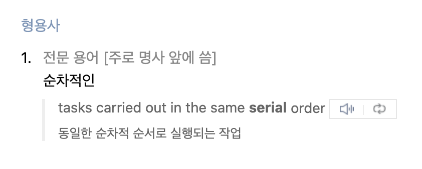
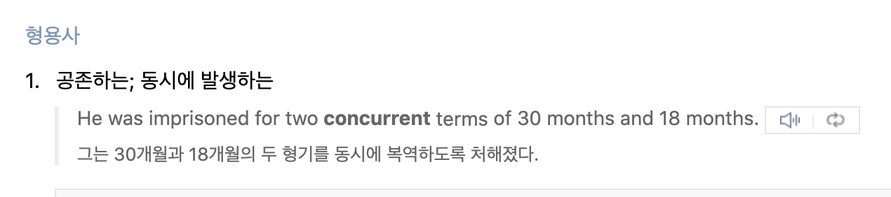
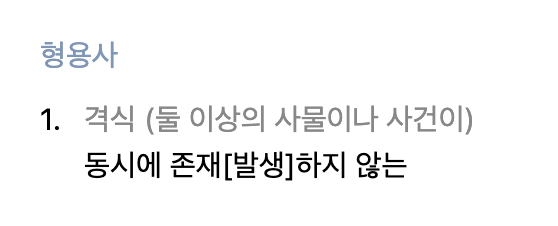
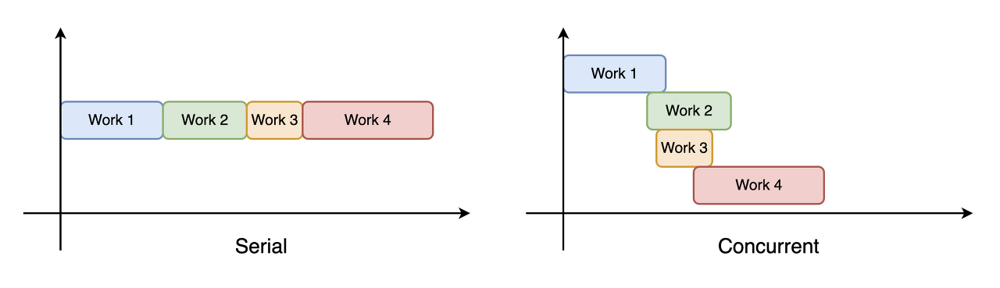

GCD로 이해하는 Serial/Concurrent와 Sync/Async의 차이
DispatchQueue를 예시로 Serial/Concurrent와 Sync/Async의 차이를 알아본다.
Table of Contents
- Overview
- 왜 이 단어를 사용하게 되었는가?
- GCD에서 Serial/Concurrent와 Sync/Async
- Serial/Concurrent 작업을 Sync/Async하게 실행하는 Case 비교
Overview
비동기 프로그래밍에서 Serial/Concurrent와 Sync/Async의 차이를 이해하는 것이 가장 골치아팠다. 이 개념을 처음 접했을 때 Serial이나 Sync나 ‘순서대로’라는 의미로 다가왔기 때문에, 둘이 같은 뜻인데 왜 다르게 사용되는 것인지 이해하기 어려웠다(SerialQueue는 왜 SyncQueue라고 쓰지 않는 것인지 정말 궁금했다).
이런 오해는 Serial과 Sync의 의미가 어떻게 다른지 이해하지 못한 상태였기 때문이었다. 이 글에서는 두 개념이 어떻게 다른지 사전적 의미에서부터 살펴보고, GCD의 DispatchQueue에서 이 개념들이 어떻게 사용되는지 알아본다.
이전 글 : GCD
왜 이 단어를 사용하게 되었는가?
먼저 각 단어의 사전적 의미는 다음과 같다.
Serial

Concurrent

Synchronous
Asynchronous

Serial과 Concurrent는 ‘순서대로’와 ‘동시에(순서를 지키지 않는)’의 의미를 갖는다. 이것은 어떤 작업의 실행 또는 발생 순서와 관련이 있다. n개의 작업이 있을 때, serial한 동작은 n번째 작업이 실행되고 모두 끝난 뒤에 n+1번째 작업이 실행되고, concurrent한 동작은 n번째 작업이 실행된 후 곧바로 n+1, n+2, …번째 작업들도 동시에 실행된다.
Sync와 Async는 ‘동시에 존재하는’과 ‘동시에 존재하지 않는’의 의미를 갖는다. 이것은 어떤 작업을 요청했을 때 응답이 돌아오는 시점과 관련이 있다. 즉, 요청과 응답이 동시에 존재하느냐 마느냐를 의미하는 것이다. 어떤 작업 A를 실행시킬 것을 요청하면, 그 작업이 완료되었을 때는 완료되었다는 응답을 반환한다. Sync한 동작은 작업 A에 대한 응답이 돌아오기 전까지 다른 작업 B의 실행을 요청하지 않는다. Async한 동작은 작업 A의 응답을 기다리지 않고 바로 다음 작업의 실행을 요청한다.
GCD에서 Serial/Concurrent와 Sync/Async
Serial/Concurrent가 여러 작업들 간의 실행/종료의 순서를, Sync/Async가 하나의 작업을 요청했을 때 응답의 대기 여부를 의미한다는 것을 알고 나면 DispatchQueue의 동작이 한 번에 이해된다.
Serial and Concurrent Queue
DispatchQueue는 여러 개의 작업을 Queue 구조로 가지고 있다가, 적절한 thread에 전달해서 실행되도록 한다. 이 떄, DispatchQueue에 있는 작업들이 thread에 전달되는 순서에 따라 queue의 종류가 구분된다. 현재 queue에서 thread에 전달한 작업이 종료된 후에 다음 작업을 thread로 전달하여 모든 작업들이 순서대로 실행되도록 하는 SerialQueue와, thread에 전달한 작업의 종료 여부와 상관없이 queue에 들어있는 작업을 실행 가능한 thread에 바로바로 전달해서 모든 작업이 동시에 실행될 수 있도록 하는 ConcurrentQueue가 그것이다.
이것을 그림으로 표현하면 다음과 같다.

Sync or Async Execute
DispatchQueue는 sync 또는 async 방식으로 작업을 할당받는다. Sync 방식의 작업은 thread에서 실행(요청)되면 작업이 종료(응답)될 때 까지 다른 작업들을 모두 중지하고 대기시킨다. Async 방식의 작업은 thread에서 실행(요청)된 후 종료(응답)되지 않아도 다른 작업들이 실행된다.
이것을 그림으로 표현하면 다음과 같다.

Serial/Concurrent 작업을 Sync/Async하게 실행하는 Case 비교
Serial/Concurrent queue에서 Sync/Async 방식의 작업을 실행시킬 때 총 4가지 경우가 가능하다.
Serial - Sync
SerialQueue에 할당된 작업(1, 2, 3)은 1 - 2 - 3의 ‘순서대로’ 실행된다. 또, 각 작업은 sync 방식으로 실행되므로 다른 작업(A, B, C)들은 각각의 sync 작업(1, 2, 3)이 종료될 때 까지 실행되지 않는다. 결과적으로, 1 - A - 2 - B - 3 - C의 순서로 실행된다.
1 | let serialQueue = DispatchQueue(label: "cskime.serialQueue") |
Serial - Async
SerialQueue에 할당된 작업(1, 2, 3)은 위와 같은 순서로 동작한다. 이번에는 각 작업을 async 방식으로 실행하기 때문에 작업 1, 2, 3과 A, B, C간의 순서가 지켜지지 않는다(작업 1이 종료되기 전에 작업 A가 먼저 실행/종료될 수 있다). 결과적으로, 1 - 2 - 3의 순서는 지켜지지만 전체 작업들의 순서는 지켜지지 않는다.
1 | let serialQueue = DispatchQueue(labeel: "cskim.serialQueue") |
Concurrent - Sync
ConcurrentQueue에 할당된 작업(1, 2, 3)들은 SerialQueue와 반대로 동시에 발생할 수 있고, 어떤 작업이 먼저 종료될 지 알 수 없다. 따라서, 1 - 2 - 3의 순서가 지켜지지 않을 수 있다. 하지만, 각 작업이 sync 방식으로 실행된다면 해당 작업이 종료될 때 까지 다른 작업은 실행되지 않으므로, 결과적으로 1 - A - 2 - B - 3 - C의 순서가 지켜질 수 있다.
1 | let concurrentQueue = DispatchQueue( |
Concurrent - Async
ConcurrentQueue에 할당된 작업들(1, 2, 3)을 async 방식으로 실행시킨다면, queue의 작업들의 순서 1 - 2 - 3도 지켜지지 않고, 전체 프로그램의 순서 또한 보장되지 않는다. 따라서, 작업 1, 2, 3과 A, B, C의 전체 순서가 지켜지지 않는다. (단, 예시에서 작업 A, B, C는 main thread에서 동작하기 때문에 A - B - C의 실행 순서는 보장되고 있다. 작업 1, 2, 3과 A, B, C 사이의 실행 순서가 보장되지 않는다.)
1 | let concurrentQueue = DispatchQueue( |